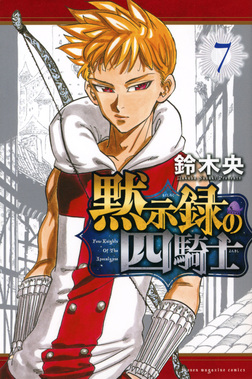
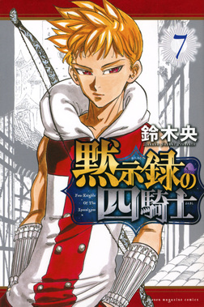

黙示録の四騎士
作者:鈴木央
 ノラガミ
ノラガミ
あらすじ
『七つの大罪』の続編であり、聖戦終結から16年後の世界が舞台の冒険ファンタジー！！
ある予言「遠くない未来、世界を滅ぼす四人の聖騎士が現れる。その名を〈黙示録の四騎士〉」。
厄災の目を摘まんと色めき立つ者は、アーサー王に忠誠を誓いし一騎当千の騎士たち。その余波は遠く辺境まで及ぶ。
”神の指”に住む少年パーシバルは祖父のバルギスと共に平和な生活を送っていたが、ある日実の父親にバルギスを殺害されてしまう。
パーシバルは、なぜバルギスが殺されたのか、そしてその父親イロンシッドの親玉アーサー・ペンドラゴンを倒すために旅に出る。
パーシバルは神の指から降りると狐を見つける。パーシバルが狐から告げられたのは、
四つの厄災で世界を滅ぼす四人の騎士「飢餓」「疫病」「戦争」「死」が存在すること、そして自身がその中の一人であることだった。
単行本 現17巻